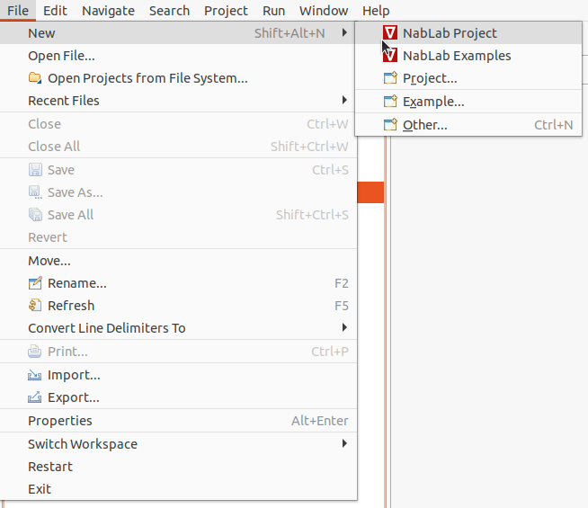
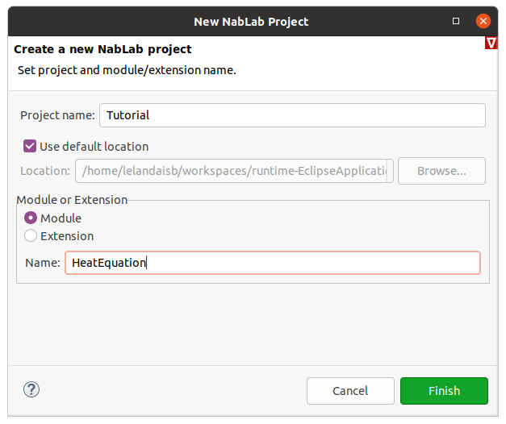
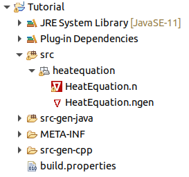
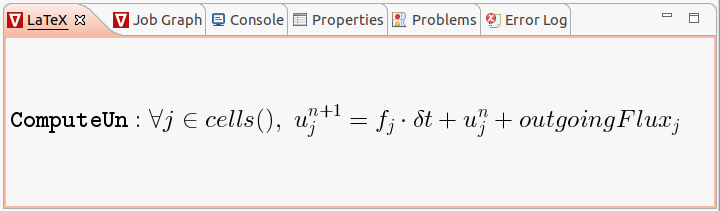
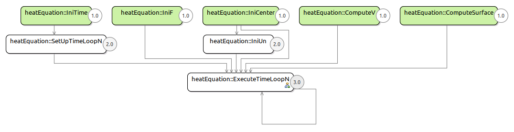
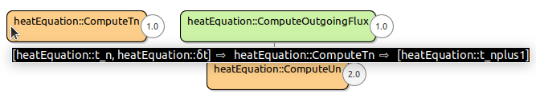
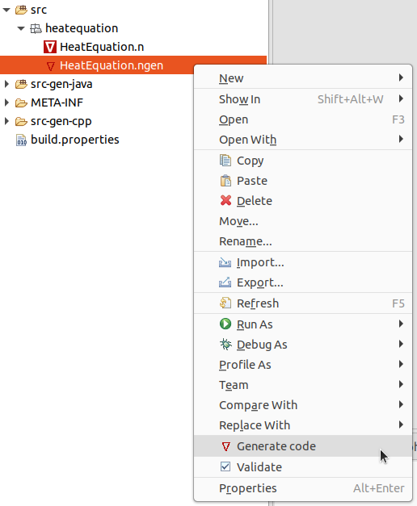
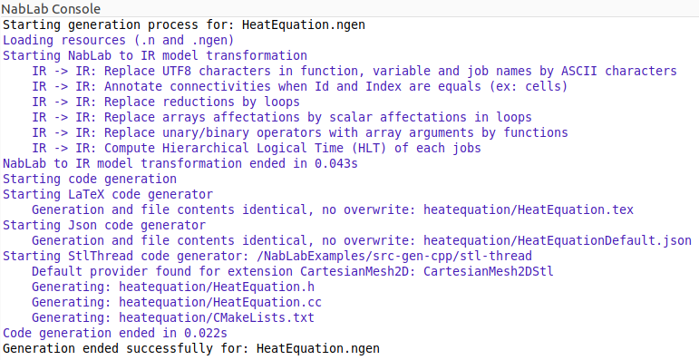
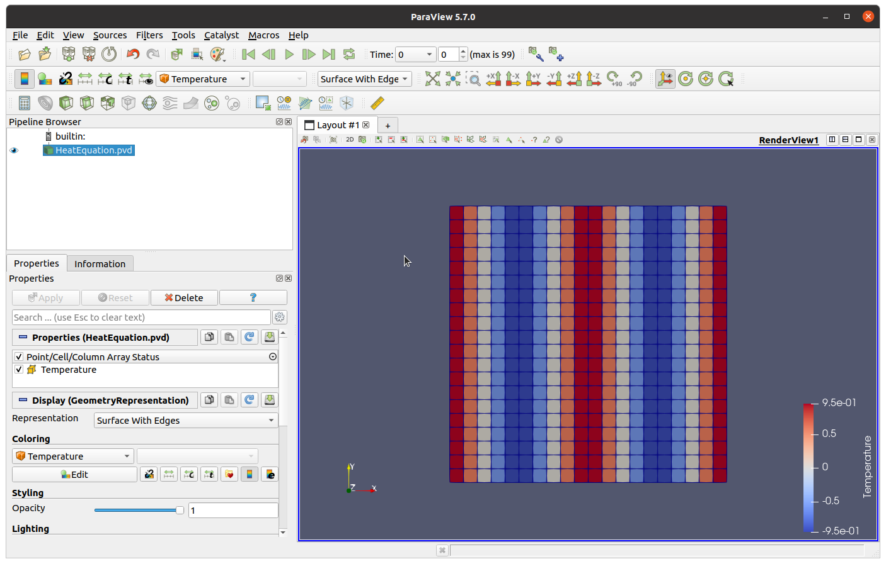

My first module
Presentation of the problem
The aim of this tutorial is to implement a simple equation of diffusion in NabLab on a 2D cartesian mesh:
In this tutorial the equation is discretized with a finite volume scheme on a 2D cartesian mesh. A constant approximation of u by cell gives:
where \(u_M\) is the temperature of the cell M, \(f_M\) is the source term of the cell M, \(\nu\) is the face normal vector and \(K_{MM'}\) the value of \(K\) on \(M \cap M'\).
Consequently:
Creating the project
Just click on the main menu File > New > NabLab Project to create a new project:

A new wizard is launched, asking for a project name and a module name:

Enter Tutorial as project name, select the Module radio button, enter HeatEquation as module name and click on the Finish button to create the new project. The new project is available in the Model Explorer on the left of the window. It contains two files (HeatEquation.n, and HeatEquation.ngen) in the Tutorial/src/heatequation/ folder:

Implementing the module
The module must be implemented in the HeatEquation.n file. Edit it by double-clicking on the file name in the explorer.
A full description of the language is available in the reference documentation.
Imports
The module starts with the import of the extensions: Math and CartesianMesh2D.
Extension files describe services implemented in external libraries called providers. For more details see the extension section in the reference documentation. The NabLab product includes three extensions, CartesianMash2D, Math and LinearAlgebra, and their implementations in Java and C++.
Math contains the ∑, ∏, Min and Max reductions and the usual mathematical functions (sin, cos, √...).
CartesianMesh2D contains a 2D cartesian mesh extension as well as the corresponding Java and C++ providers.
module HeatEquation;
with Math.*;
with CartesianMesh2D.*;
Options
The next part of the file relates to the definition of options: variables whose value can be set in the user data file. Two kinds of options are defined, simulation and user options:
// Simulation options
option ℝ stopTime = 0.1;
option ℕ maxIterations = 500;
// User options
option ℝ PI = 3.1415926;
option ℝ α = 1.0;
Simulation options represents the maximum time and number of iterations of the simulation. We will see below how they will define the conditions of the iteration loop.
Variables
For the heat equation module, the variables are:
- δt and t representing respectively the time step and time of the simulation. Time step is initialized with a default value. It will be constant during the simulation,
- X and center representing respectively coordinates of nodes and center of cells,
- u, V and f representing the cells' variables presented in the above equation,
- outgoingFlux representing the \(\frac{\Delta t}{V_M} \sum{K_{MM'} \frac{u_{M'}^n - u_{M}^n}{MM'}}\) part of the equation,
- surface representing the surface of faces.
let ℝ δt = 0.001;
ℝ t;
ℝ[2] X{nodes}, center{cells};
ℝ u{cells}, V{cells}, f{cells}, outgoingFlux{cells}, surface{faces};
Time iterators
The next part of the file defines the time loop iterators, a single one named n for this example, and the stop condition of the time loop.
iterate n while (t^{n} < stopTime && n < maxIterations);
Jobs
The next part of the file is dedicated to definition of jobs.
The order of jobs in the editor does not matter for execution. NabLab will build the data flow graph of jobs to determine their execution rank.
At first, four jobs for initializing the values of t, f, center and u variables are defined. Fell free to change the initialization of \(u^{n}_{j}\)!
IniTime: t^{n=0} = 0.0;
IniF: ∀j∈cells(), f{j} = 0.0;
IniCenter: ∀j∈cells(), center{j} = 0.25 * ∑{r∈nodesOfCell(j)}(X{r});
IniUn: ∀j∈cells(), u^{n}{j} = cos(2 * PI * α * center{j}[0]);
To compute the center of cells, we use the \(\sum\) reduction defined in the Math extension of the NabLab language. Thus, the following instruction must be added at the beginning of the file after the module definition:
with Math.*;
Then two jobs are needed to compute the volume and surface of cells:
ComputeV: ∀j∈cells(), V{j} = 0.5 * ∑{r∈nodesOfCell(j)}(det(X{r}, X{r+1}));
ComputeSurface: ∀f∈faces(), surface{f} = 0.5 * ∑{r∈nodesOfFace(f)}(norm(X{r}-X{r+1}));
The det and norm functions are also defined in the Math library. To see the full content of the library, press F3 on one of its functions, for example det. It will open the Math.n provided by NabLab.
Now, it is time to code the above formula. It can be done in a single job but we have divided it into two parts: the compute of the outgoing flux representing the \(\frac{\Delta t}{V_M} \sum{K_{MM'} \frac{u_{M'}^n - u_{M}^n}{MM'}}\) part of the equation and the compute of the \(u^{n+1}\) value:
ComputeOutgoingFlux: ∀j1∈cells(), outgoingFlux{j1} = δt/V{j1} * ∑{j2∈neighbourCells(j1)}(∑{cf∈commonFace(j1,j2)}( (u^{n}{j2}-u^{n}{j1}) / norm(center{j2}-center{j1}) * surface{cf}));
ComputeUn: ∀j∈cells(), u^{n+1}{j} = f{j} * δt + u^{n}{j} + outgoingFlux{j};
In the ComputeOutgoingFlux job, the face is accessed through a \(\sum\). In NabLab, all connectivities are handled in the same way even if they return a singleton like the commonFace connectivity which returns a single face.
The LaTeX view below the editor displays the job content equation and facilitates the verification of its correctness. Just place your cursor on the job of your choice in the editor to see the LaTeX view changed.

Finally, just update the global time in a last job.
ComputeTn: t^{n+1} = t^{n} + δt;
The algorithm representing the problem to solve is now complete. the last task consists in defining the global application.
Defining the application
The application must be defined in the HeatEquation.ngen file. Edit it by double-clicking on the file name in the explorer.
Note
The ngen file already exists in the project: it has been created by the wizard. If you need to create this ngen file on an existing project, NabLab provides a code generator for that: right-click on the HeatEquation.n file and select the Generate nablagen file menu.
A full description of the language is available in the reference documentation.
Global parameters
The application must identify its main module which will control the simulation time loop.
Some parameters have to be fixed like the mesh class name and the variables representing the node coordinates, the time and time step of the simulation and the maximum time and time step of the simulation.
Note
All keywords and references to NabLab variables are available by contextual code completion with CTRL-Space keys.
MainModule HeatEquation heatEquation
{
nodeCoord = X;
time = t;
timeStep = δt;
iterationMax = maxIterations;
timeMax = stopTime;
}
VTK output
NabLab provides a PVD file format serializer, a VTK compatible file format. To configure this serializer add the block below.
VtkOutput
{
periodReferenceVariable = heatEquation.n;
outputVariables = heatEquation.u as "Temperature";
}
The periodReferenceVariable field defines the module variable used as a reference for the frequency of the outputs, here the iteration number n. The outputVariables field defines the list of nodes and cells variables to write in the output file. The name after the as keyword is the name displayed by Paraview.
The outputPath and outputPeriod can be set in the json data file.
Generation target
To configure generation, create a generation block, for example for the StlThread target.
Note
Other generation target are available by code completion with CTRL-Space key or in the ngen reference documentation.
StlThread
{
outputPath = "/Tutorial/src-gen-cpp/stl-thread";
CMAKE_CXX_COMPILER = "/usr/bin/g++";
}
For C++ targets, provide the path to the desired compiler into the CMAKE_CXX_COMPILER variable.
Jobs sequence
NabLab computes the data flow of the application to define the job execution rank. To see the computed graph of jobs, display the HeatEquation.ngen file in the editor and press the F2 key.

To see jobs composing the time loop, double-click on HeatEquation::ExecuteTimeLoopN job. Input and output variables of a job are displayed in puttingthe mouse over a job.

Note
A quick representation of the graph is available in the Job Graph View tab under the editor by pressing the F1 key (instead of F2 for the complete editor).
Generation
To launch code generation, just right-click on the HeatEquation.ngen file and select Generate Code

C++ source code files HeatEquation.h and HeatEquation.cc are generated in the src-gen-cpp/stl-thread folder. A CMakeLists.txt file is also generated to compile the application. A LaTeX file containing the content of the jobs and an example of json data file are also generated in the src-gen folder. The list of generated files are displayed in the NabLab console.

Note
A good practice is to name src-gen a directory containing only generated code.
Compilation
To build the application, go into the generation directory containing the CMakeLists.txt generated file i. e. /Tutorial/src-gen-cpp/stl-thread/heatequation and enter the following commands:
mkdir build
cd build
cmake ..
cmake --build .
Execution
To execute the application, a data file is needed. NabLab generates a template named HeatEquationDefault.json in the src-gen directory. Copy this file, paste it in the src directory, rename it HeatEquation.json (select the file in the explorer and press F2 key) and double-click on it in the explorer to open the json editor.
Remove the comment line, the file is no more generated, and add a mesh block as follows:
{
"heatEquation":
{
"_outputPath_comment":"empty outputPath to disable output",
"outputPath":"output",
"outputPeriod":1,
"stopTime":0.1,
"maxIterations":500,
"PI":3.1415926,
"alpha":1.0
},
"mesh":
{
"nbXQuads":20,
"nbYQuads":20,
"xSize":0.1,
"ySize":0.1
}
}
The application can then be executed. In the build directory, enter the following command:
./heatequation ../../../../src/heatequation/HeatEquation.json
Vizualizing results
The outputPeriod value is set two 1 in the HeatEquation.json and the outputPath value is output. Consequently, an output directory has been created and it contains a VTP file for each time step and a PVD file named *HeatEquation.pvd". The results can be visualize in Paraview with the following command:
paraview output/HeatEquation.pvd
